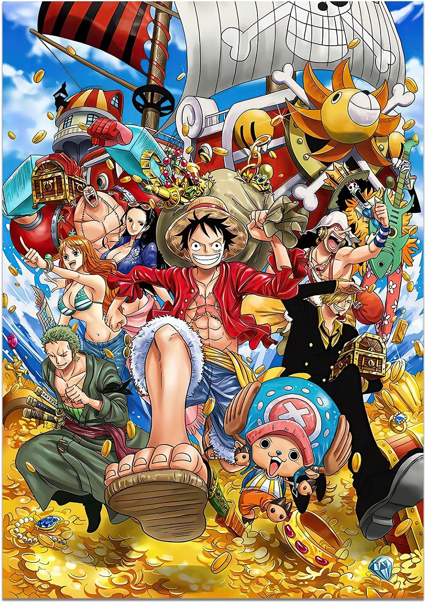
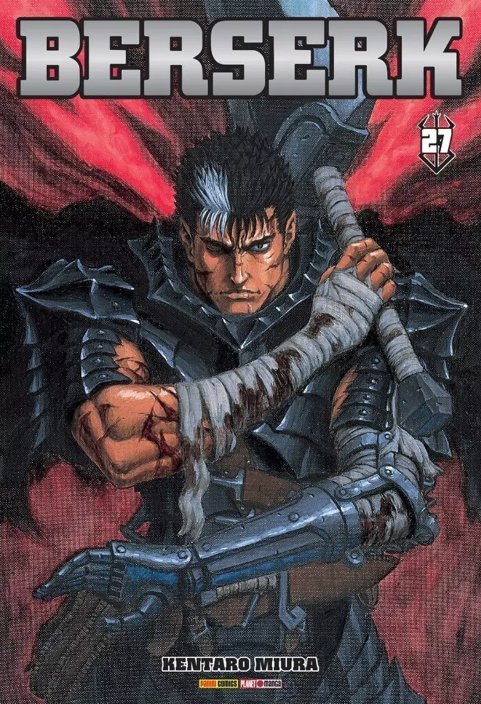
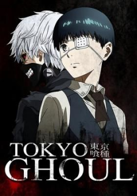
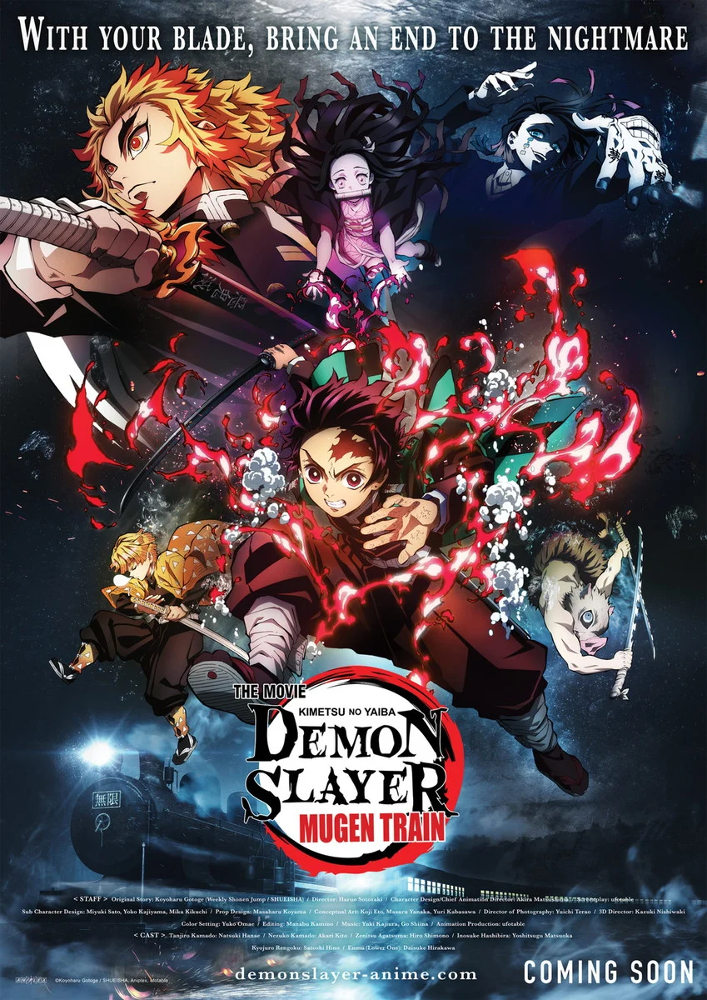

One Piece
As aventuras de Luffy em busca do lendário tesouro dos piratas, o One Piece.
Os mangás mais lidos, suas curiosidades e os últimos lançamentos.
| Gênero | Popularidade | Exemplo de mangá |
|---|---|---|
| Shounen | Muito alta | One Piece |
| Seinen | Alta | Berserk |
| Isekai | Alta | That Time I Got Reincarnated as a Slime |
| Shoujo | Média | Sailor Moon |
| Josei | Média | Nana |

As aventuras de Luffy em busca do lendário tesouro dos piratas, o One Piece.

Uma jornada sombria e brutal em um mundo medieval repleto de monstros e tragédias.

Um jovem que se torna meio-ghoul e precisa sobreviver entre humanos e monstros.

O mangá que conquistou o mundo com arte impecável e uma história emocionante.